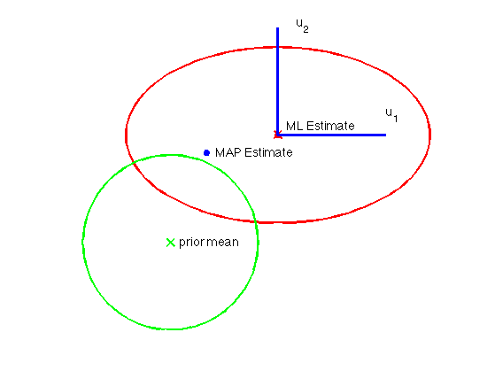

xbar = [3;3];
S = [3,0;0,1];
Mu0 = [0;0];
Sigma0 = eye(2);
hold on;
axis equal
gaussPlot2d(xbar,S,'color','r');
gaussPlot2d(Mu0,Sigma0,'color','g');
fs = 14;
text(Mu0(1) + 1/4, Mu0(2), 'prior mean', 'fontsize', fs);
wml = xbar;
wmap = [1, 2.5];
plot(wmap(1), wmap(2), 'b*','linewidth',3);
text(wmap(1) + 1/4, wmap(2), 'MAP Estimate', 'fontsize', fs);
plot(wml(1), wml(2), 'r*','linewidth',3);
text(wml(1) + 1/4, wml(2) + 1/4, 'ML Estimate', 'fontsize', fs);
line([wml(1),wml(1)+3],[wml(2),wml(2)],'linewidth',3)
text(wml(1)+3,wml(2)+1/2,'u_1', 'fontsize', fs);
line([wml(1),wml(1)],[wml(2),wml(2)+3],'linewidth',3);
text(wml(1)+1/2,wml(2)+3,'u_2', 'fontsize', fs);
axis off
printPmtkFigure('geomRidge')
